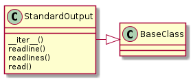
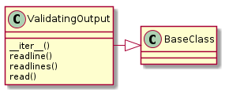

The ReadOutput acts as a file-like object for output.
A class to act as a read-only file.
StandardOutput(source, *args, **kwargs) |
A class to act as a file (read-only) |

The ValidatingOutput takes a function (‘validate’) that is used to check the lines of output as they are read.
ValidatingOutput(lines, validate, *args, ...) |
A ValidatingOutput reads from an iterable and validates the lines. |
